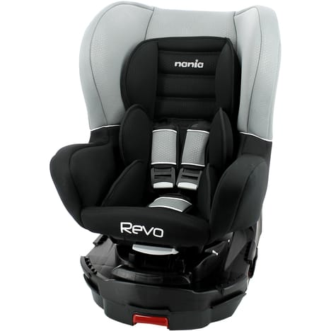
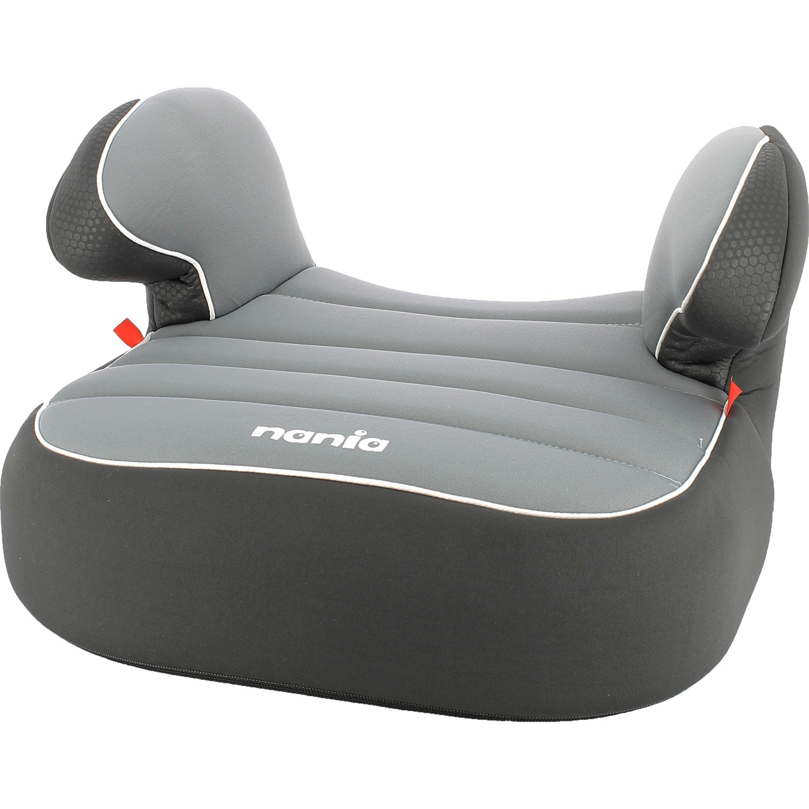
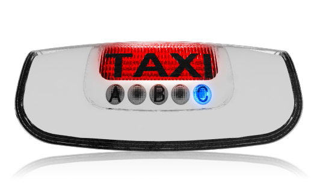
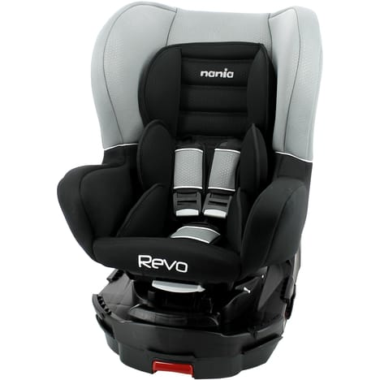
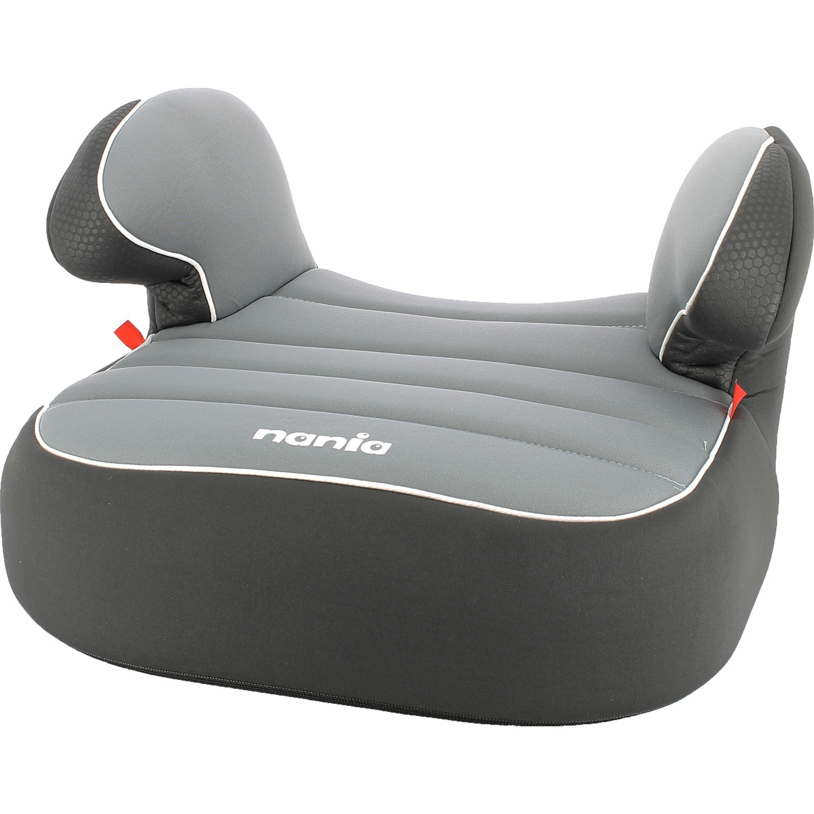
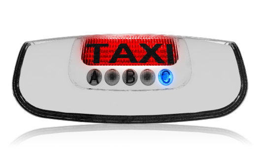
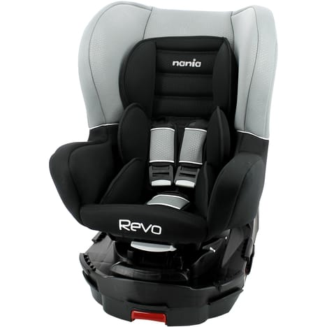
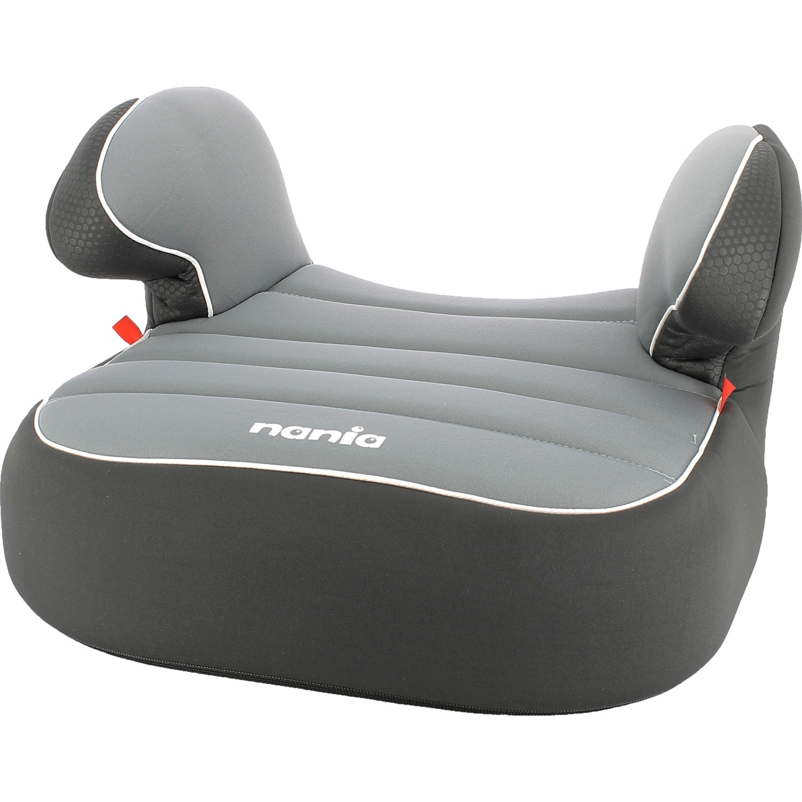
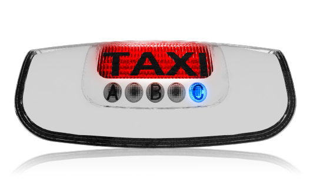
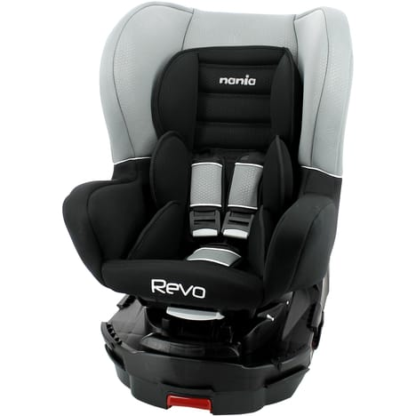
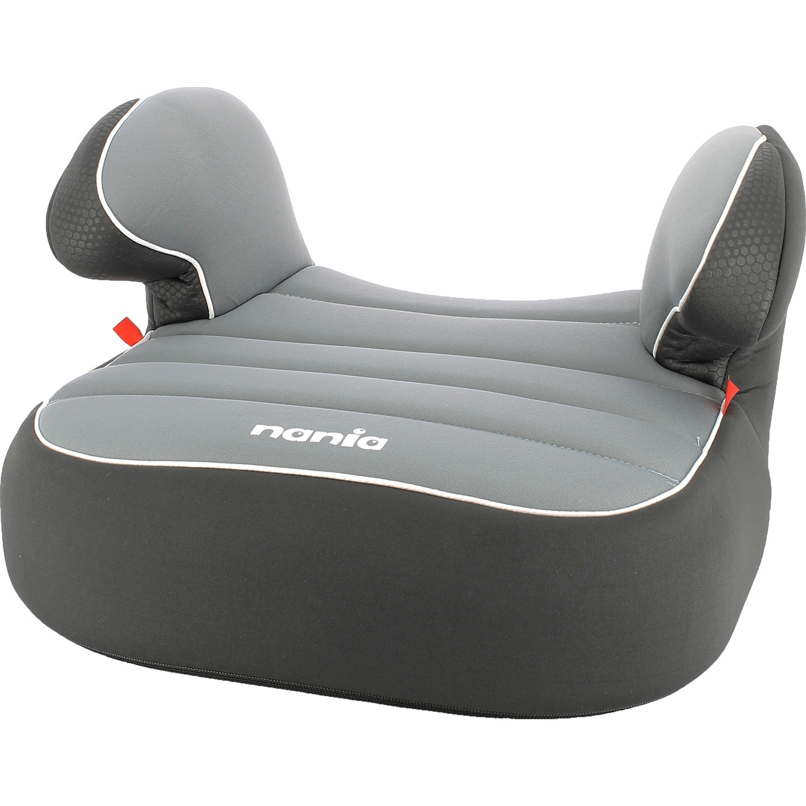
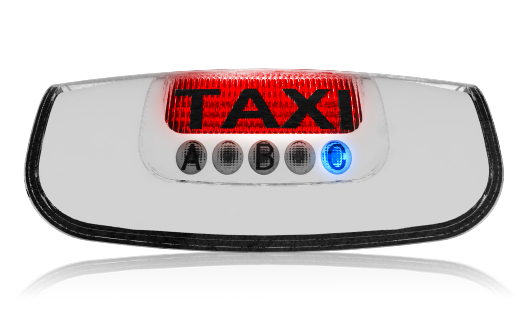
1 . Voyagez en groupe dans un véhicule spacieux
Profitez d'un grand taxi pour voyager confortablement, que vous soyez 5 , 6
ou 7 personnes.
2 . Un siége bébé plus deux réhausseurs.
3 . Transportez des bagages volumineux
Pour rejoindre les gares ou les aéroports, vous pouvez transporter vos valises,
skis, planches de surf...
4 . Faites des économies
Un seul véhicule au lieu de 2 pour se déplacer en groupe, c'est toujours plus
économique et aussi plus écologique !
Un taxi conventionné est agréé et certifié par la Caisse Primaire d’Assurance Maladie (CPAM), il intervient dans le cas d’une hospitalisation, une convocation médicale ou des soins réguliers. Vous devez disposer d’une prescription médicale de transport, appelée aussi bon de transport ou Transport Assis Professionnalisé (TAP), établi par un médecin avec la mention « Transport par VSL ou Taxi ». Ces transports, bénéficiant d’une prise en charge par la Sécurité Sociale, ne peuvent être effectués que par un taxi conventionné. Bon à savoir : Vous pouvez bénéficier du tiers payant : vous n’avancez ainsi pas les frais. Vous ne payez pas le taxi (transport taxi conventionné gratuit pour vous, la caisse primaire d’assurance maladie assurant la prise en charge de la prestation).
bénéficier du Tiers Payant ? :
1 Donnez au chauffeur de taxi conventionné votre prescription médicale de
transport. Volet sur lequel est indiqué « à adresser à l’organisme ».
2 Présentez-lui votre attestation de droit de l’organisme dont vous dépendez.
Ces deux documents doivent indiquer le même taux de prise en charge.
Vous devez fournir au chauffeur de taxi trois documents :
• Votre prescription médicale de transport
• Votre carte Vitale
• Votre attestation de droits à jour
Pour bénéficier de la prise en charge par l’Assurance Maladie et de la dispense d’avance des frais, vous devrez impérativement
présenter au chauffeur de taxi ces documents.
Votre taxi conventionné télétransmettra directement les informations à l’Assurance Maladie et le remboursement sera effectué
au taxi.
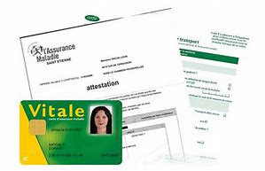